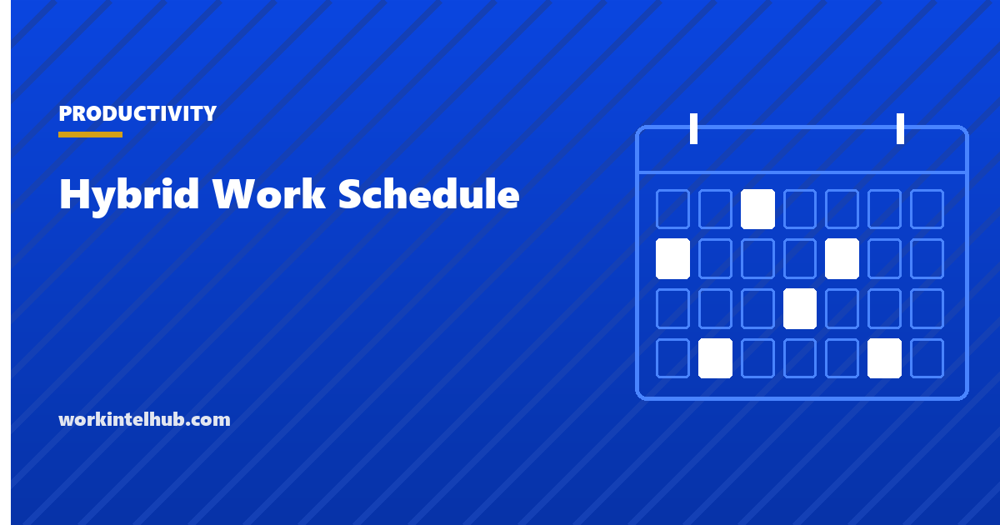

Hybrid Work Schedule

A hybrid work schedule is the rule that says which days, or how many days, employees work from the office rather than remotely. The rule can be fixed for everyone, fixed by team, or left to individuals with a minimum, and each version trades collaboration against desk cost and fairness in a different way.
The six models below cover almost every schedule in use. The calculator shows what each does to your office on its busiest day, which is the number facilities and finance will ask about, and the sections after it cover what the attendance data actually shows and how to choose without relitigating it every quarter.
Model your team's week
Peak occupancy assumes everyone follows the pattern. Flexible minimums are shown at their worst case, everyone choosing the same two days, which in practice is Tuesday to Thursday.
The six models
| Model | How it works | Collaboration | Desk demand | Watch for |
|---|---|---|---|---|
| 3:2 fixed | Same three days for everyone, usually Tuesday to Thursday | Highest; whole team together three days | Peak every in-day, empty Monday and Friday | Office too small for the peak |
| 2:3 fixed | Same two days for everyone | Good; two guaranteed overlap days | Peak two days | Meetings compress into two days |
| Anchor day | One fixed day; others chosen individually | One guaranteed day | Predictable peak on the anchor | Other days drift to empty |
| Cohorts | Team split into groups with different in-days and one overlap day | Within-cohort high; cross-cohort one day | Roughly halved | Cohorts become silos |
| Week on, week off | Alternating weeks by group | Within-group only | Lowest | Two groups that rarely meet |
| Flexible minimum | Any N days, employee's choice | Unplanned | Even in theory; Tuesday to Thursday in practice | Nobody in the same room on purpose |
The last row is the one most companies chose first and are now moving away from. A flexible minimum fills the office evenly on paper and produces an office that is full mid-week and empty either side, with the people who came in on Monday discovering that the colleagues they came in to see did not. If the reason for the office is collaboration, the schedule has to put specific people in the same room on specific days, which means fixed days, anchors or cohorts.
What the attendance data shows
Gallup's tracking of US employees in remote-capable roles found, in 2023, about five in ten working hybrid, three in ten fully remote and two in ten fully on-site. Among hybrid workers the average was 2.6 days a week in the office, with three days the most common arrangement, and attendance concentrated on Tuesday, Wednesday and Thursday, with only about a third of hybrid workers in on a Friday.
Two consequences for schedule design. First, a 3:2 fixed pattern on Tuesday to Thursday is not a mandate so much as a description of what people already do, which makes it easier to introduce and harder to make collaborative, because everyone is already there. Second, any model that relies on people choosing Monday or Friday will under-deliver. Use those days for cohorts that need the space, not for the whole company's flexibility.
The pressure to tighten schedules since then is covered in our return to office entry, including what employees say they will do about full-return mandates, and the productivity evidence for each arrangement is collected on the remote work productivity statistics page.
How to choose
- Decide what the office is for. Collaboration means fixed days or cohorts. Mentoring juniors means anchor days with seniors present. Desk cost means cohorts or alternating weeks. "Culture" is not a reason until it is translated into one of those.
- Size the office to the peak, or size the peak to the office. The calculator's peak line is the constraint. A 3:2 model for 200 people with 120 desks is a cohort model with extra steps.
- Set the rule at team level, within a company minimum. A company minimum of two days with each team fixing which two gives managers the overlap they need without central scheduling of every desk.
- Write down the exceptions process before the first request arrives. Caring responsibilities, disability accommodation and long commutes will all be raised, and the answer has to be consistent.
- Measure presence with the least intrusive source, which is badge data, and say how it will be used. Once attendance is scored, proximity bias follows: the people present more get rated better. Our guide to measuring productivity when you cannot see the work covers the alternative.
- Review once a year, not every quarter. Schedules that change every few months train people to wait out the current one.
Writing it down
The schedule belongs in the remote work policy, with the model, the team-level rule, the exceptions process, how attendance is recorded and what it is used for, and the notice given before any change. Our guide to writing a remote work policy has the structure, and the employee handbook guide covers where it sits among the other policies. Where badge or network data is used to monitor attendance, the notice rules in four states apply, listed in the state monitoring law summary.
Key takeaways
- Six models: 3:2 fixed, 2:3 fixed, anchor day, cohorts, week on/off, flexible minimum. Each trades collaboration against desk demand and fairness.
- Flexible minimums fill the office evenly on paper and Tuesday to Thursday in practice, with nobody in the same room on purpose.
- Gallup found hybrid workers averaging 2.6 office days, three days most common, and Friday attendance around a third.
- Decide what the office is for first, then size the office to the peak or the peak to the office.
- Set the rule at team level within a company minimum, write the exceptions process before the first request, and review annually.
- Measure presence with badge data, say how it is used, and watch for proximity bias once attendance is scored.
Frequently asked questions
What is a hybrid work schedule?
A rule setting which days, or how many days, employees work from the office rather than remotely. It can be fixed for everyone, fixed per team or cohort, anchored on one shared day, alternated by week, or left to individuals within a minimum.
What is the most common hybrid work schedule?
Three days in the office, typically Tuesday to Thursday. Gallup's tracking found hybrid workers averaging 2.6 office days a week with three the most common, and attendance concentrated mid-week.
What is a 3:2 hybrid schedule?
Three days in the office and two remote each week, usually with the same three days for everyone. It gives the most overlap and the highest desk demand, and it matches what most hybrid workers already do, which makes it easy to introduce.
How do I choose a hybrid schedule for my team?
Start from what the office is for: collaboration points to fixed days or cohorts, mentoring to anchor days, desk cost to cohorts or alternating weeks. Check the peak occupancy against desks, set the specific days at team level within a company minimum, and write the exceptions process before the first request.
Should hybrid schedules be the same for every team?
The minimum should be company-wide; the specific days should be set by team, because the point of in-office days is that the people who work together are there together. A single company-wide pattern only achieves that if the office can hold everyone at once.
How is hybrid attendance tracked?
Most often through building badge data, which records presence without activity. Network or device location is more granular and reads as monitoring, and in four states written notice is required before it is used. The policy should say what is recorded and what it is used for.